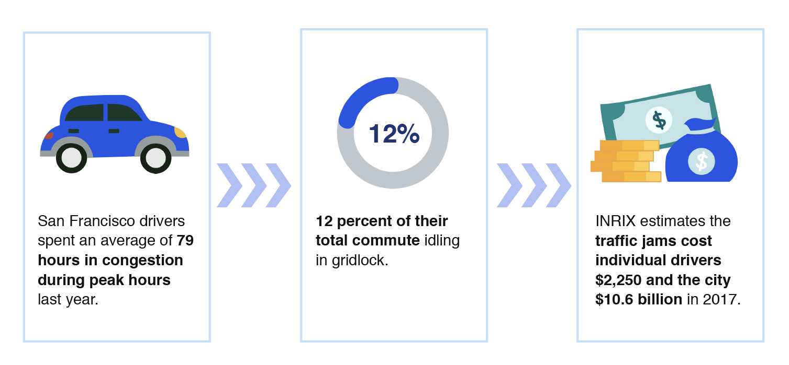
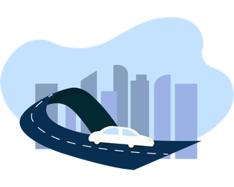
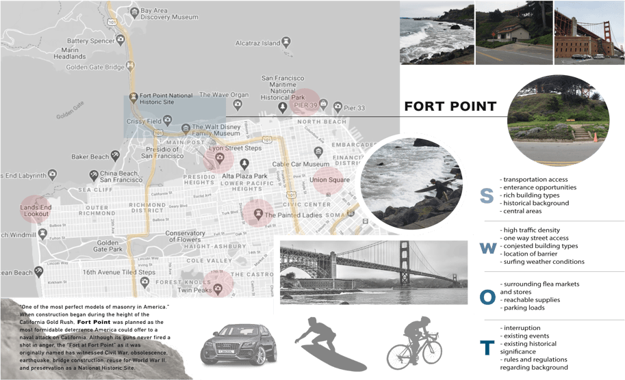
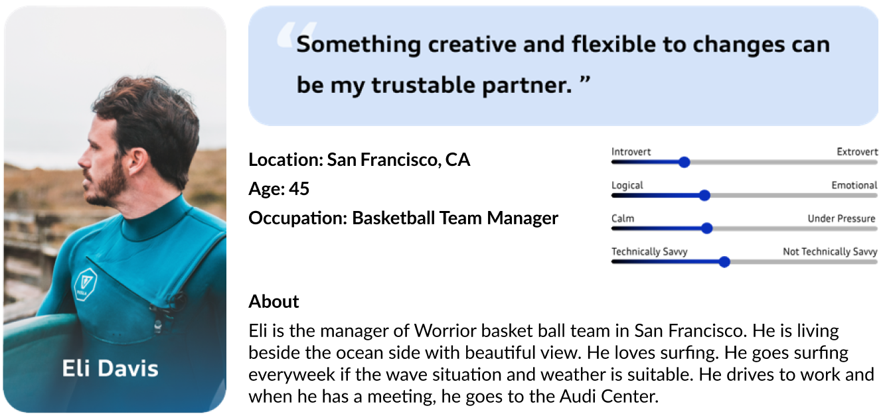
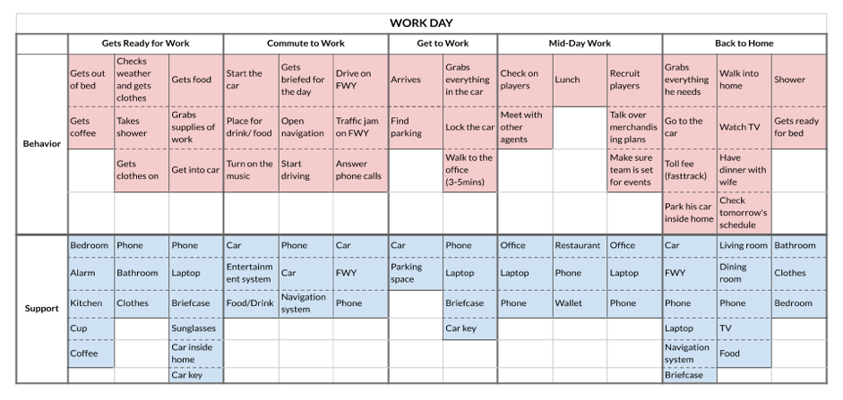
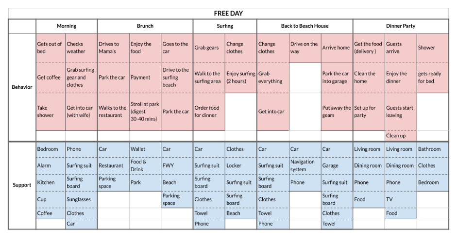
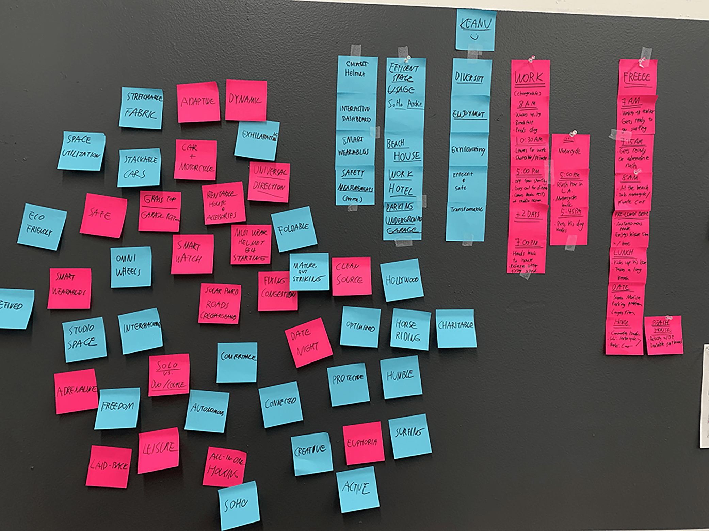
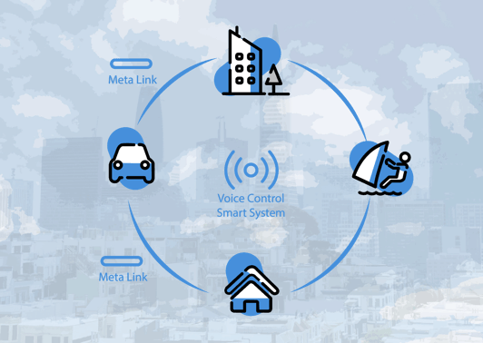
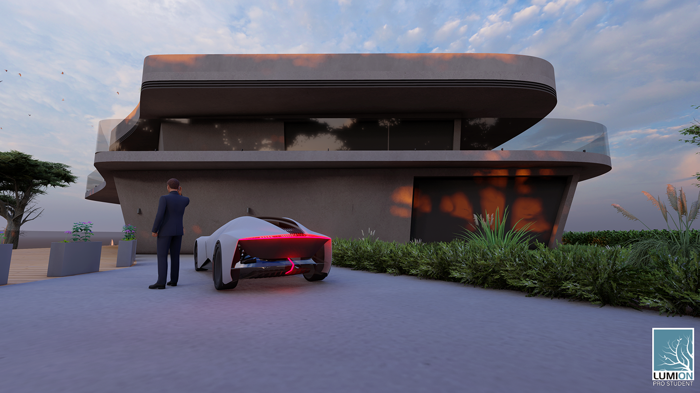

Sponsored by AUDI, this collaborative project unites Industrial Design and Architecture expertise to create a blueprint for an improved San Franciscan future. The focus is on integrating mobility concepts by designing adaptive workspaces and enriching the city's overall experience.
2019/02 - 2019/05
Vehicle | Interior
Multi-media
Graphic | Product | Motion designer
To integrate future mobility concepts by designing adaptive workspaces and flexible living environments within San Francisco.
To utilize industrial design and architectural principles to create an improved way of life and enhanced urban experiences for people residing in the San Francisco area.
 To utilize Biophilic design principles and innovative
technology, such as voice control and the Meta Link system, for seamless interaction between
users, smart buildings, and autonomous vehicles.
To utilize Biophilic design principles and innovative
technology, such as voice control and the Meta Link system, for seamless interaction between
users, smart buildings, and autonomous vehicles.

This foundational research led to the creation of a SWOT Map, which was instrumental in analyzing user lifestyles against city locations and activities. The findings were then used to build a detailed User Mental Model and a specific Persona (Eli, a 45-year-old Basketball Team Manager), which helped the team to stimulate realistic daily situations and needs. Finally, the research data drove an initial Concept Brainstorming session, allowing the team to generate and converge on a single, focused design direction.
Focused on identifying specific problems experienced by people living in San Francisco.

Focused on identifying specific problems experienced by people living in San Francisco.

Less-effort drivingThe SWOT Map was utilized as a tool for comprehensive urban analysis, allowing us to gain a deeper understanding of the users' daily lifestyle by correlating their habits and activities with specific city locations.

How might we improve the quality of life and solve the urban challenges faced by San Francisco residents by leveraging interdisciplinary design to integrate mobility concepts with adaptive workspaces and seamless technological experiences?

Through dedicated user research, we gained a deeper, more comprehensive understanding of our target users' cross-cultural experiences, needs, and specific requirements, which was foundational for the product's development.


We conducted focused concept brainstorming sessions using our persona's lifestyle as the primary reference point. This process was essential for both generating a wide array of creative ideas and subsequently narrowing those concepts down to a single, prioritized direction for development.


This task utilizes the smart mirror functionality: when a user approaches the mirror (e.g., during their morning routine), the device automatically activates to display real-time weather information, allowing them to instantly check the day's forecast.

This task is facilitated by an interactive interface integrated into a foldable table, which automatically deploys from the side of the seat, allowing users to conveniently view and interact with digital photos.

This task leverages the vehicle's autonomous driving capability to enable users to conduct AR meetings with colleagues while commuting. This feature effectively transforms passive travel time into productive, efficient work time.

This task involves a highly simplified front car interface that uses easily understandable graphics to display key vehicle status information. Users can manage essential controls, such as setting the interior temperature, navigation destination, and seat position, entirely through intuitive voice control commands.

This task utilizes the Meta Link system for seamless vehicle-to-building connectivity. The system, activated via voice control for user entry and exit, allows the vehicle to connect directly to the building for charging and passive entry, thereby maximizing the efficiency of interior building space.


Through this project, I gained invaluable practical experience in achieving complex goals through efficient team collaboration. It underscored the necessity of high-quality communication as the foundation of successful teamwork. Key lessons learned include the importance of confidently representing one's ideas and demonstrating the patience required to actively listen and understand team members, which collectively guides the group toward a successful outcome
